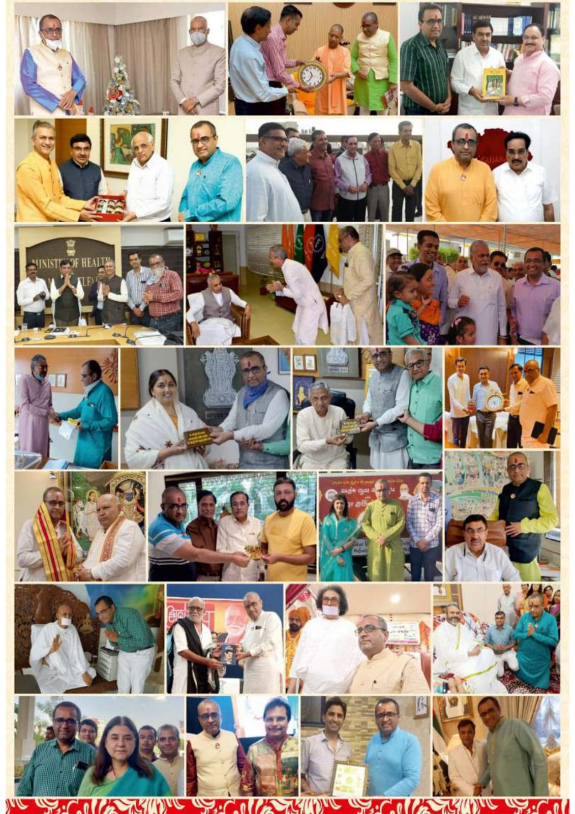
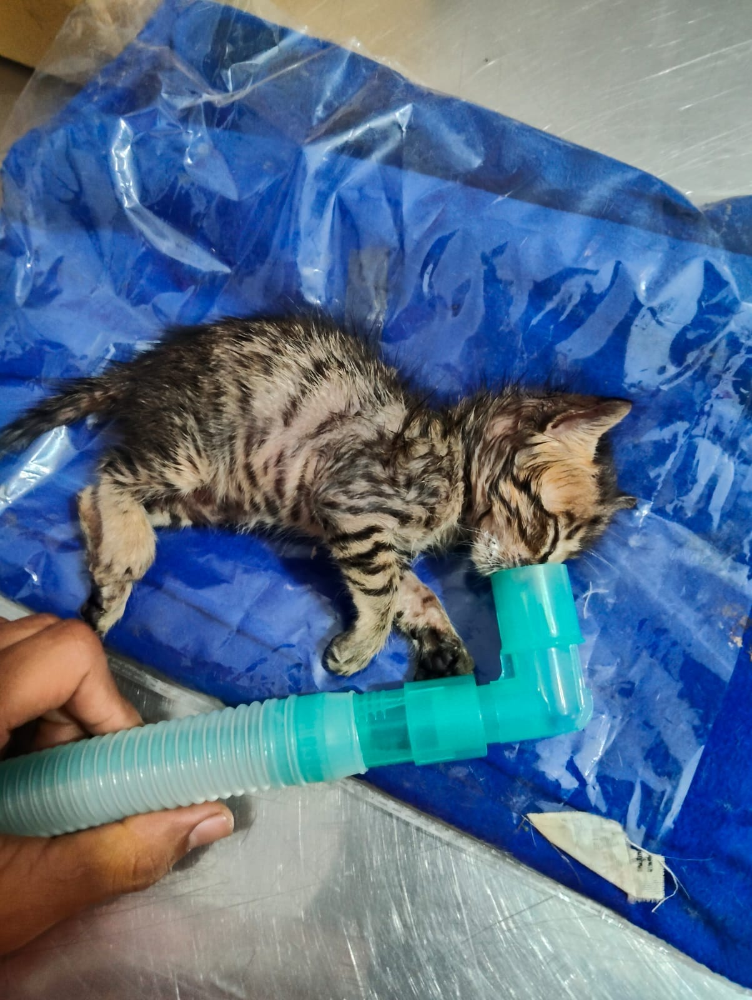
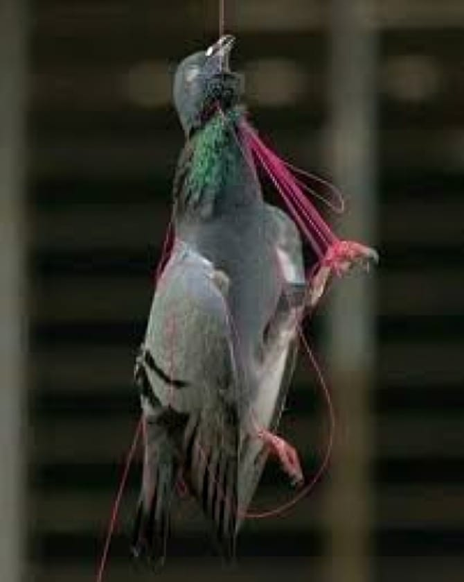

24x7 Animal Helpline
Be the first call for a sick, injured or stranded animal.
Call the helpline →22+ years of compassionate service
Rescue, treatment, food and a second chance for injured birds and animals across Rajkot and Gujarat.
Every call can save a life


How we help
From an urgent call to rehabilitation, our work is built around compassionate support.
Be the first call for a sick, injured or stranded animal.
Call the helpline →Timely treatment and compassionate support for stray animals.
Mobile rescue support that reaches animals in need.
Safe shelter and care while animals recover.
Promoting compassion, vegetarianism and non-violence.
Coordinated response for animals during emergencies.
Rescue photos
Real moments from the work of our rescue and treatment teams.



Campaigns with purpose
Free distribution campaigns help communities protect animals and birds with food, water and practical resources.
Help us reach more ↗450 kg wheat and grains for birds, 30 kg wheat balls for fish, 25 kg sweet corn for squirrels, milk and rotis for 700 stray dogs, and 10 kg ant feed.
Joint operations with Arham Yuva Seva Group across 17 affected Gujarat districts.
During lockdown, the Trust fed stray animals and birds with community support.
Two state-of-the-art studios for NGOs, activists and content creators to raise awareness for animal welfare, environment and social causes. Investment: ₹8 lakh+.
Make a difference
Support free treatment, rescue operations, food and shelter for animals and birds.
Indian citizens
For transactions through Indian bank accounts or cards issued by Indian banks.
UPI ID SHREEKARUNAFOUNDATION@BARODAMPAY
Foreign citizen / NRI
Donation Tithi Scheme
For information about the scheme, contact the foundation.
Enquire by email ↗Why donate?
Reach us
For free treatment of stray animals and birds in Rajkot, please contact our team.
Veterinary hospital
Old Shreeji Gaushala, B/H Tulip Party Plot, Gondal Road, Vavdi, Rajkot (Gujarat-India).
Get directions ↗Managed by Shree Karuna Foundation Trust, Rajkot
Trust Regd. No E-7920